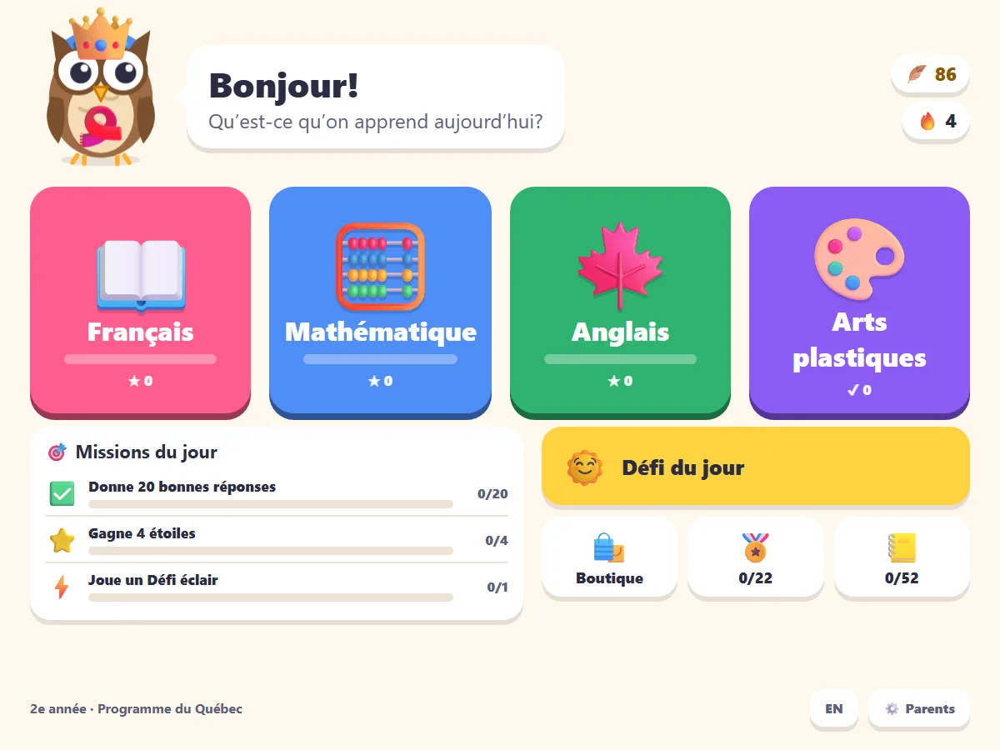
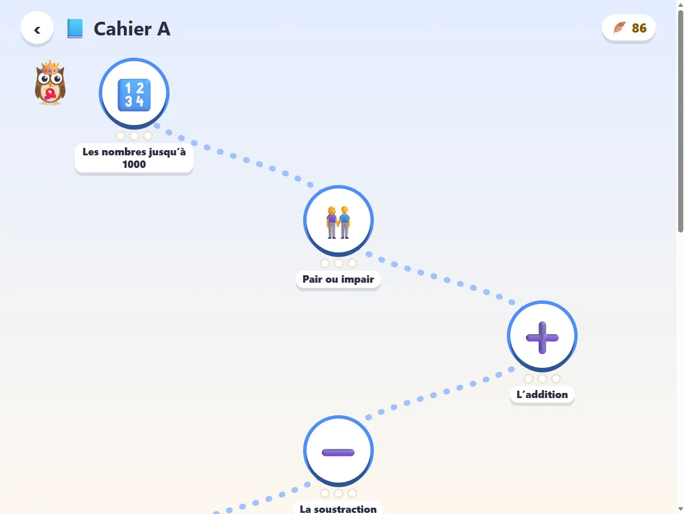
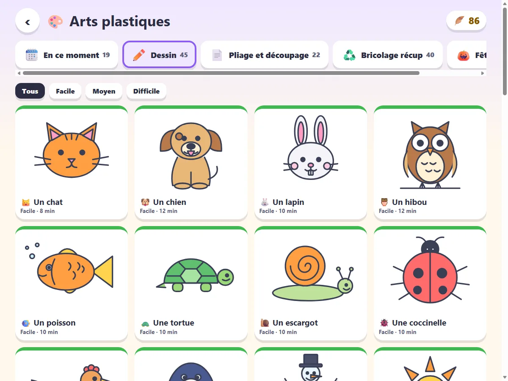

🦉 Petit Hibou
Jeu d’apprentissage pour la 2e année au Québec · 给魁北克二年级孩子的学习游戏
▶ Jouer · 开始玩


- Français, mathématique (cahiers Numérik A/B/C), anglais, arts plastiques · 法语、数学、英语、手工美术
- Facile / Moyen / Difficile · 简单 / 中等 / 难
- Défi éclair, ballons, mémoire, gardiens, missions, badges · 闪电挑战、打气球、翻牌、守护者、任务和徽章
- Plus de 170 projets de dessin et de bricolage étape par étape · 170 多个分步画画和手工项目
Sur iPad : Safari → Partager → « Sur l’écran d’accueil » pour l’installer. · iPad 上用 Safari 打开，点「分享」→「添加到主屏幕」即可安装。